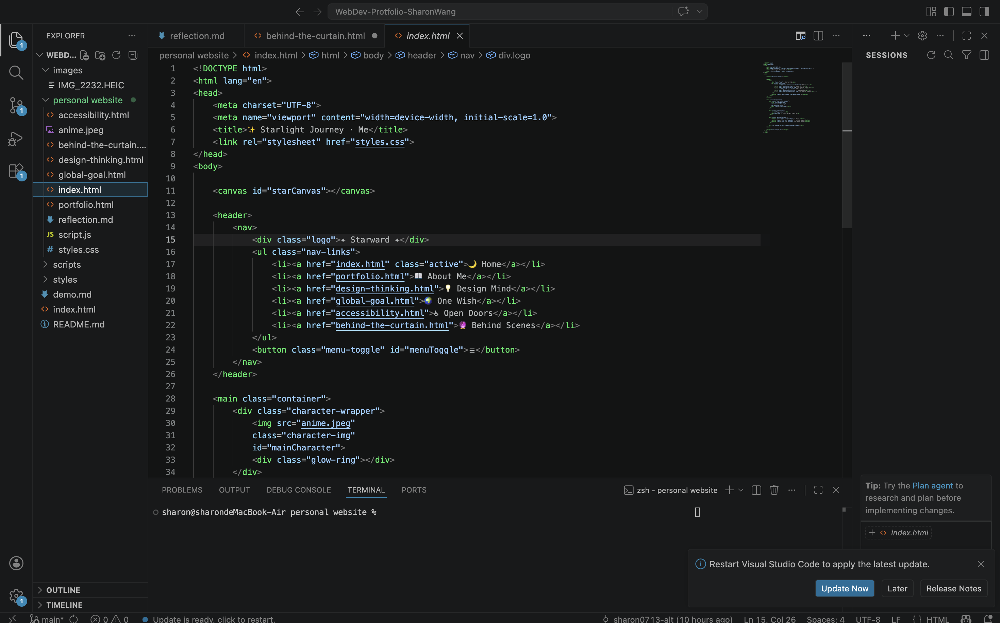

I started with a simple idea: create a space that feels like a quiet dream. Every color, animation, and line of code was chosen with care.

The floating character and the glowing ring — because it feels like magic ✨